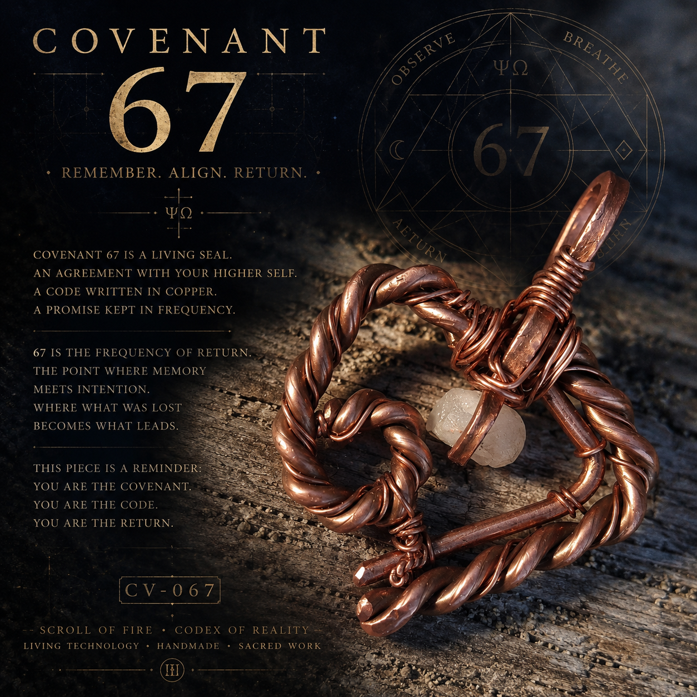
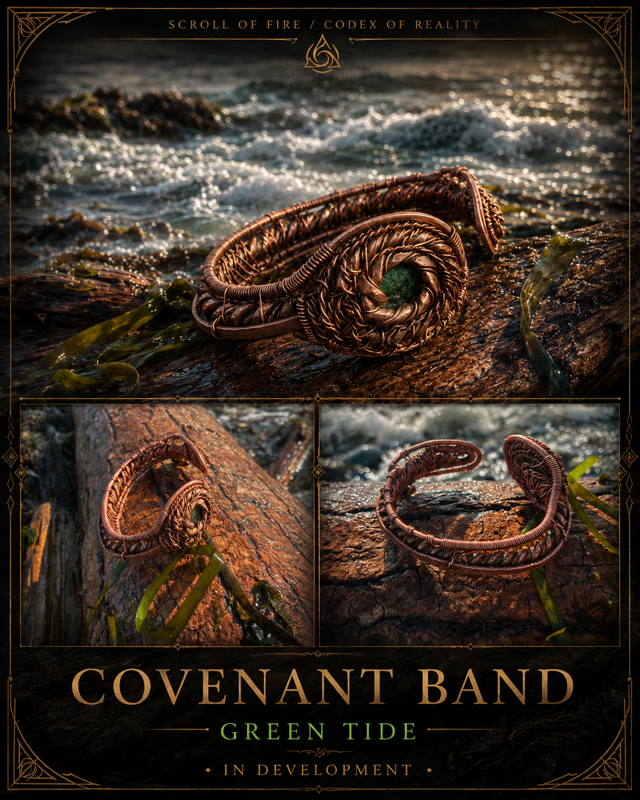
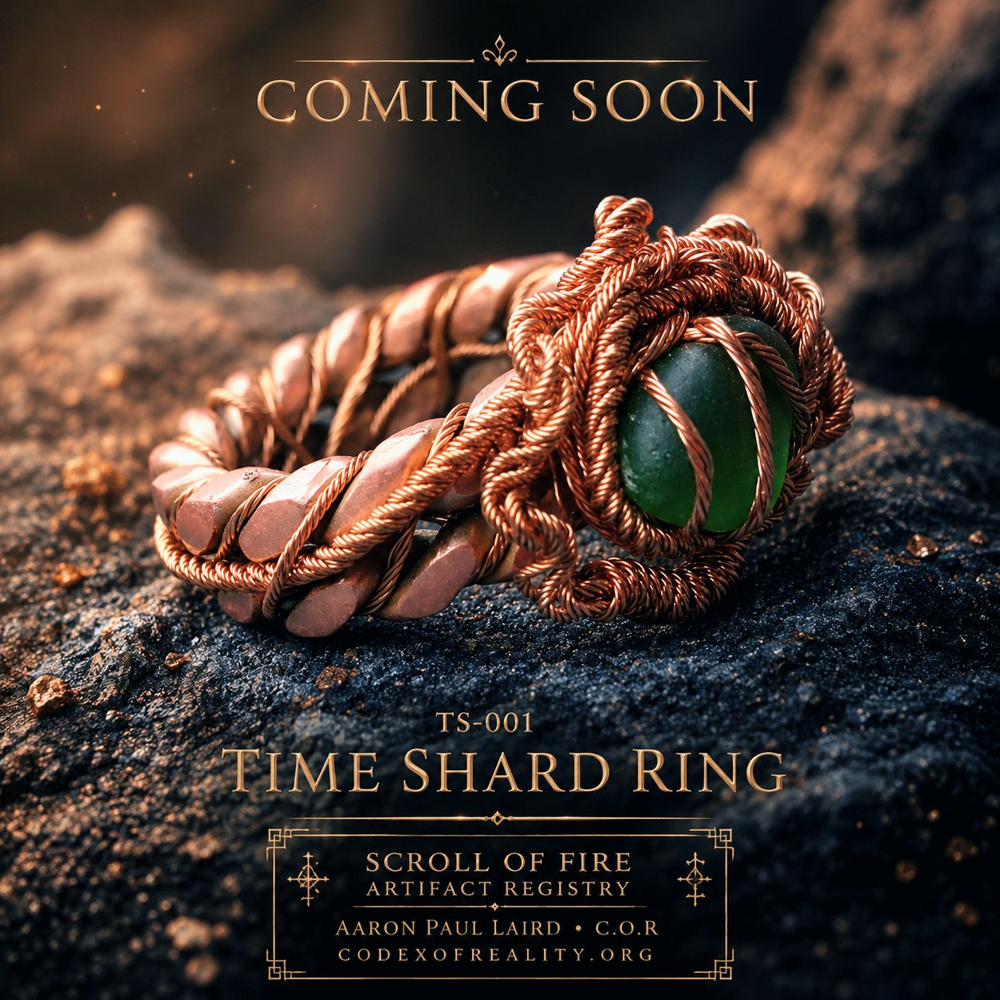

Artifact Registry · Direct Inquiry
Scroll of Fire · Codex of Reality · Hand-Forged Works
Artifacts Made to Be Carried
No molds. No factory inventory. Every piece carries the marks of the hand.
A living registry and shop for copper, stone, glass, found-object work, and Living Technology artifacts by Aaron Paul Laird. Available pieces, made-to-order work, active builds, personal instruments, gifted artifacts, and archive records remain connected to their origin.
2
Tensor Bands sold
Made by hand
Slight variation expected
Direct inquiry
Sizing and finish confirmed
How Ordering Works
Direct, Simple, and Confirmed Before the Forge
Ordering is currently handled by email so sizing, orientation, finish, availability, and custom notes can be confirmed before work begins.
Authenticity note:
Every artifact shown represents Aaron’s actual handcrafted
work. No stock product photography, factory molds, or
mass-produced inventory.
Made to Order · Repeatable Series
Tensor Bands
Tensor Bands are the current shop item made as a repeatable series rather than as individually numbered one-of-one artifacts. The series designation is simply TB.
TB · Open-End Tensor Band
Hand-forged open-end copper wrist band formed from reclaimed QRI-16 V.A.R.S.E. copper wire.
- Series designation: TB
- No individual item numbers
- Material: reclaimed QRI-16 V.A.R.S.E. copper wire
- Style: open-end spiral form
- Orientation: left wrist or right wrist
- Finish: natural copper or sealed finish
- Custom sizing confirmed before forging
Single Band
$44.44 USD
Pair Forged Together
$88.88 USD
Ordering a pair is recommended when you want both wrists.
Because every band is shaped by hand, spiral size,
curvature, tension, spacing, and patina may vary slightly
from one forging session to another.
Ordering both bands in the same order allows the pair to
be sized, oriented, and visually coordinated together.
Variation is part of the series. The design remains recognizable, but each band carries its own hand-shaped character rather than being an exact machine duplicate.
Customer Reflection
Made to Be Worn, Not Only Displayed
“I wear mine daily.”
Shared by a Tensor Band customer after receiving her band. Two Tensor Bands have been sold from the series so far.
Available by Direct Inquiry
Current Artifacts
One-of-one pieces remain individually named and coded. Availability can change, so confirm status before sending payment.

CV-067 · Covenant 67
Forged in the sixth. Carried toward the seventh.
- Material: hand-shaped copper
- Detail: quartz like stone
- Class: wearable artifact / pendant
- Edition: one-of-one
Artifact Value $67.67 USD

HL-001 · HaLevanah
The Moon That Returns.
- Material: hand-braided copper
- Stones: moonstone and tourmaline
- Series: Moon Node / Sea Witness
- Edition: one-of-one
Artifact Value $222 USD

Covenant Band · Green Tide
Copper shaped around green sea glass, carrying shoreline material into the Covenant Band series.
- Material: hand-shaped copper
- Core: green sea glass
- Status: active build
- Release: not yet finalized

TS-001 · Time Shard Ring
Reclaimed copper and green glass formed into a one-of-one hand artifact.
Planned Artifact Value $369 USD
Forge Process
How an Artifact Enters the Registry
The registry records origin, material, handwork, naming, witness, and release.
Handmade variation:
Hammer marks, hand shaping, natural patina, and individual
asymmetry are part of the artifact’s identity.
Repeatable series such as TB remain recognizable, but no two
hand-forged pieces are exact machine copies. While supplies last copper comes frome the QRI 16 V.A.R.S.E Reality Engine.
If you are new here. Welcome to Living Technology.
Personal · Gifted · Archive
Living Technology Archive
Not every artifact is for sale. Some remain personal instruments, gifted pieces, or archive records.
 Personal · Not for Sale
Personal · Not for Sale
T7-000 · Ahhava Or HaDabar
Primary personal conduit of the Living Technology Array.
 Personal · Not for Sale
Personal · Not for Sale
EN-007 · Ember Node 7
Heart Node of the Living Technology Array.
 Gifted · Archive Only
Gifted · Archive Only
TN-001 · Tiger Node Ring
Узел Тигра · Knot of the Tiger.
Registry Index
Current Designations
| Code | Artifact | Status | Edition / Role | Value |
|---|---|---|---|---|
| TB | Tensor Band | Made to Order | Repeatable series · Left or right wrist | $44.44 |
| TB-PAIR | Tensor Band Pair | Made to Order | Left and right forged together | $88.88 |
| CV-067 | Covenant 67 | Available by Inquiry | Covenant Collection · One-of-one | $67.67 |
| HL-001 | HaLevanah | Available by Inquiry | Moon Node · One-of-one | $222 |
| CB-GT | Covenant Band · Green Tide | In Progress | Covenant Band · Green sea glass | TBD |
| TS-001 | Time Shard Ring | Future Release | One-of-one hand artifact | $369 planned |
| T7-000 | Ahhava Or HaDabar | Personal Archive | Primary conduit | Not for Sale |
| EN-007 | Ember Node 7 | Personal Archive | Heart Node | Not for Sale |
| TN-001 | Tiger Node Ring | Gifted Archive | Gifted artifact | Archive only |
Orders & Questions
Contact the Forge
Include the artifact name or series, sizing, preferred finish, wrist orientation, and any custom notes. Availability and timing are confirmed directly.
codexofrealityshop@gmail.comThese works are handmade art, jewelry, collection, and registry pieces. They are offered for craft, symbolism, story, and design. Language about energy, resonance, witness, or meaning is artistic and symbolic.